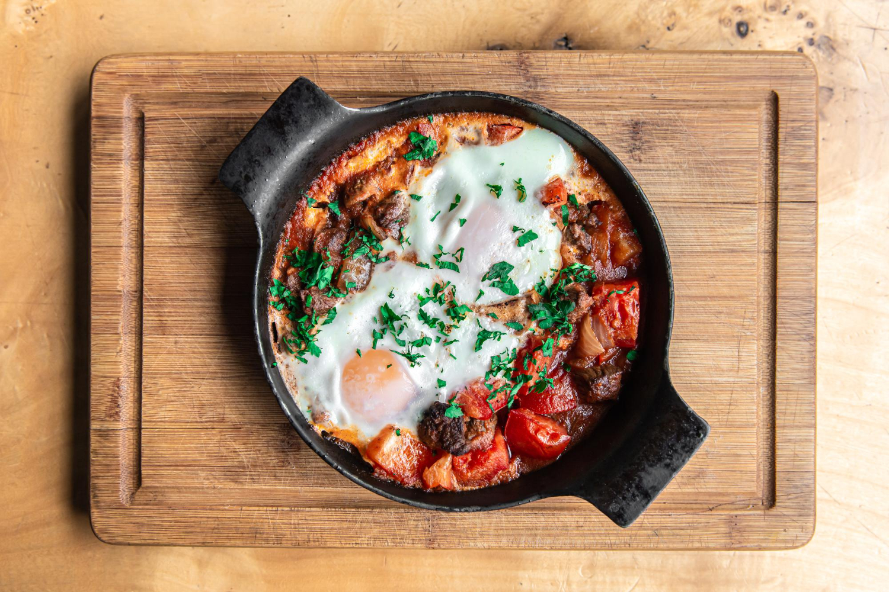

Home
Egg Tamata

Description
This recipe comes directly from the daily life of my best friend, a recipie which they often made everday for breakfast, a fast and hearty version of shakshuka filled with the goodness of tomatoes and protein ritch eggs.
Eathing this with bread is a whole meal jam packed with nutrients from the veggies, protein and fat from the eggs and carbs from the bread a truly allrounder to get your day started
Ingredients
Serving 1
- Eggs 2
- Tomatoes 3
- Peppers 2
- Onion 1
- Garlic 3 cloves
- Bread 2 slices
- Butter
- Olive Oil
- Black Pepper
- Coriander
Steps
- Get your Cast Iron Skilette on medium flame and add a few cubes of butter with a 1Tbsp of Olive oil and let it heat it
- Chop your onions and garlic and put them in the pan
- Remove the onions and garlic when translucent
- Cut tomatoes in half and place them skin side down on low-mid flame, sprinkle salt on the tomatoes and put the lid on
- After a few minutes add back the onions and garlic and chopped peppers and smash them
- Add a splash of water and cook the raw flavour out of the tomatoes, the indicator will be the smell
- After a few minutes when the gravy is thick make small divets and crack your egg init add salt and crushed black pepper on the top
- Cover it with a lid and turn the flame to low for a few minutes to cook the eggs to your liking
- Toast the bread to your linking
- Serve piping hot with crispy toasted bread and Egg Tomata